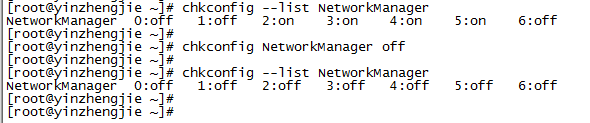
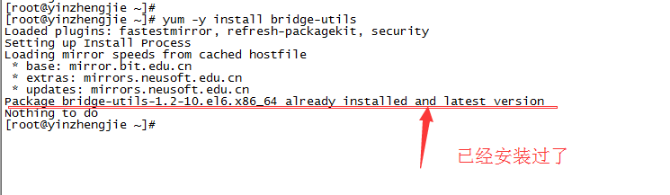

brctl创建虚拟网卡详解
brctl创建虚拟网卡详解
作者：尹正杰
版权声明：原创作品，谢绝转载！否则将追究法律责任。
很久之前我分享过一篇关于搭建Openvpn的笔记，在笔记的最后我分享了一个脚本，是用来创建虚拟网卡的，今天我们就来聊一聊如何用Linux命令创建虚拟网卡，在学习命令之前，我们先了解一下Linux比较重要的2个模式：TUN和TAP。
在计算机网络中，TUN与TAP是操作系统内核中的虚拟网络设备。不同于普通靠硬件网络板卡实现的设备，这些虚拟的网络设备全部用软件实现，并向运行于操作系统上的软件提供与硬件的网络设备完全相同的功能。
TAP等同于一个以太网设备，它操作第二层数据包如以太网数据帧。TUN模拟了网络层设备，操作第三层数据包比如IP数据封包。
操作系统通过TUN/TAP设备向绑定该设备的用户空间的程序发送数据，反之，用户空间的程序也可以像操作硬件网络那样，通过TUN/TAP设备发送数据。在后种情况下，TUN/TAP设备向操作系统的网络栈投递（或"注入"）数据包，从而模拟从外部接收数据的过程。
要注意的是在Linux操作系统中，桥接模式不支持“NetworkManager”，因此在创建桥接网卡之前，建议提前将其关闭掉。
一.使用命令行创建桥接模式网卡
1.关闭“NetworkManager”服务：



2.安装“brctl”软件包：

3.查看帮助：
1 #!/usr/bin/env gorun 2 #@author :yinzhengjie 3 #Blog:http://www.cnblogs.com/yinzhengjie/tag/GO%E8%AF%AD%E8%A8%80%E7%9A%84%E8%BF%9B%E9%98%B6%E4%B9%8B%E8%B7%AF/ 4 #EMAIL:y1053419035@qq.com 5 6 [root@yinzhengjie ~]# brctl --help 7 Usage: brctl [commands] 8 commands: 9 addbr <bridge> add bridge #添加一个桥 10 delbr <bridge> delete bridge #创建一个桥 11 addif <bridge> <device> add interface to bridge #将某个接口添加到这个桥上来 12 delif <bridge> <device> delete interface from bridge #将某个接口从这个桥上删除 13 setageing <bridge> <time> set ageing time 14 setbridgeprio <bridge> <prio> set bridge priority 15 setfd <bridge> <time> set bridge forward delay 16 sethello <bridge> <time> set hello time 17 setmaxage <bridge> <time> set max message age 18 sethashel <bridge> <int> set hash elasticity 19 sethashmax <bridge> <int> set hash max 20 setmclmc <bridge> <int> set multicast last member count 21 setmcrouter <bridge> <int> set multicast router 22 setmcsnoop <bridge> <int> set multicast snooping 23 setmcsqc <bridge> <int> set multicast startup query count 24 setmclmi <bridge> <time> set multicast last member interval 25 setmcmi <bridge> <time> set multicast membership interval 26 setmcqpi <bridge> <time> set multicast querier interval 27 setmcqi <bridge> <time> set multicast query interval 28 setmcqri <bridge> <time> set multicast query response interval 29 setmcqri <bridge> <time> set multicast startup query interval 30 setpathcost <bridge> <port> <cost> set path cost 31 setportprio <bridge> <port> <prio> set port priority 32 setportmcrouter <bridge> <port> <int> set port multicast router 33 show [ <bridge> ] show a list of bridges #查看当前是否有桥设备 34 showmacs <bridge> show a list of mac addrs 35 showstp <bridge> show bridge stp info 36 stp <bridge> {on|off} turn stp on/off 37 [root@yinzhengjie ~]#
4.创建桥接网卡配置流程：
1 #!/usr/bin/env gorun 2 #@author :yinzhengjie 3 #Blog:http://www.cnblogs.com/yinzhengjie/tag/GO%E8%AF%AD%E8%A8%80%E7%9A%84%E8%BF%9B%E9%98%B6%E4%B9%8B%E8%B7%AF/ 4 #EMAIL:y1053419035@qq.com 5 6 7 8 [root@yinzhengjie ~]# brctl addbr br0 #创建一个名称为"br0"的网卡 9 [root@yinzhengjie ~]# ifconfig eth0 0 up #将需要桥接的网卡IP清空 10 [root@yinzhengjie ~]# ifconfig 11 eth0 Link encap:Ethernet HWaddr 00:0C:29:32:86:A9 12 inet6 addr: fe80::20c:29ff:fe32:86a9/64 Scope:Link 13 UP BROADCAST RUNNING MULTICAST MTU:1500 Metric:1 14 RX packets:5137 errors:0 dropped:0 overruns:0 frame:0 15 TX packets:2329 errors:0 dropped:0 overruns:0 carrier:0 16 collisions:0 txqueuelen:1000 17 RX bytes:4930215 (4.7 MiB) TX bytes:222313 (217.1 KiB) 18 19 lo Link encap:Local Loopback 20 inet addr:127.0.0.1 Mask:255.0.0.0 21 inet6 addr: ::1/128 Scope:Host 22 UP LOOPBACK RUNNING MTU:65536 Metric:1 23 RX packets:16 errors:0 dropped:0 overruns:0 frame:0 24 TX packets:16 errors:0 dropped:0 overruns:0 carrier:0 25 collisions:0 txqueuelen:0 26 RX bytes:960 (960.0 b) TX bytes:960 (960.0 b) 27 28 [root@yinzhengjie ~]# 29 [root@yinzhengjie ~]# brctl addif br0 eth0 #在"br0"上添加"eth0"； 30 [root@yinzhengjie ~]# ifconfig br0 192.168.16.107/24 up #给"br0"配置IP； 31 [root@yinzhengjie ~]# route add default gw 192.168.16.1 #设置默认的网关地址； 32 [root@yinzhengjie ~]# 33 [root@yinzhengjie ~]# ifconfig 34 br0 Link encap:Ethernet HWaddr 00:0C:29:32:86:A9 35 inet addr:192.168.16.107 Bcast:192.168.16.255 Mask:255.255.255.0 36 inet6 addr: fe80::20c:29ff:fe32:86a9/64 Scope:Link 37 UP BROADCAST RUNNING MULTICAST MTU:1500 Metric:1 38 RX packets:27 errors:0 dropped:0 overruns:0 frame:0 39 TX packets:10 errors:0 dropped:0 overruns:0 carrier:0 40 collisions:0 txqueuelen:0 41 RX bytes:4245 (4.1 KiB) TX bytes:780 (780.0 b) 42 43 eth0 Link encap:Ethernet HWaddr 00:0C:29:32:86:A9 44 inet6 addr: fe80::20c:29ff:fe32:86a9/64 Scope:Link 45 UP BROADCAST RUNNING MULTICAST MTU:1500 Metric:1 46 RX packets:5815 errors:0 dropped:0 overruns:0 frame:0 47 TX packets:2339 errors:0 dropped:0 overruns:0 carrier:0 48 collisions:0 txqueuelen:1000 49 RX bytes:5223651 (4.9 MiB) TX bytes:223093 (217.8 KiB) 50 51 lo Link encap:Local Loopback 52 inet addr:127.0.0.1 Mask:255.0.0.0 53 inet6 addr: ::1/128 Scope:Host 54 UP LOOPBACK RUNNING MTU:65536 Metric:1 55 RX packets:16 errors:0 dropped:0 overruns:0 frame:0 56 TX packets:16 errors:0 dropped:0 overruns:0 carrier:0 57 collisions:0 txqueuelen:0 58 RX bytes:960 (960.0 b) TX bytes:960 (960.0 b) 59 60 [root@yinzhengjie ~]#
5.开启stp服务（根据你自己的需求，觉得是否开启）
1 #!/usr/bin/env gorun 2 #@author :yinzhengjie 3 #Blog:http://www.cnblogs.com/yinzhengjie/tag/GO%E8%AF%AD%E8%A8%80%E7%9A%84%E8%BF%9B%E9%98%B6%E4%B9%8B%E8%B7%AF/ 4 #EMAIL:y1053419035@qq.com 5 6 7 [root@yinzhengjie ~]# brctl show 8 bridge name bridge id STP enabled interfaces 9 br0 8000.000c293286a9 no eth0 10 [root@yinzhengjie ~]# 11 [root@yinzhengjie ~]# brctl stp br0 on 12 [root@yinzhengjie ~]# 13 [root@yinzhengjie ~]# brctl show 14 bridge name bridge id STP enabled interfaces 15 br0 8000.000c293286a9 yes eth0 16 [root@yinzhengjie ~]#
以上方式配置是在命令行上配置的，是临时存在的，只要重启网络服务可能配置就不存在的，是不长久的，不过一般运维人员都是写shell脚本，根据自己的需求编写相应的脚本，可以根据自己的需要去相应的桥接网卡。不过接下来，还要给大家推荐的是一种永久配置生效的，需要我们手动修改，估计大家也猜到了，那就是修改配置文件。
二.手动配置桥接网卡
刚刚我们介绍了用"brctl"命令来创建桥接网卡，其实这个命令存在与否都是没有关系的，因为真正的桥功能实现是内核中的网络模块（TUN/TAP）来实现的，所以它用的是桥驱动功能。因此我们可以通过编辑配置文件就可以配置桥接网卡了，
1.修改桥接配置文件
1 #!/usr/bin/env gorun 2 #@author :yinzhengjie 3 #Blog:http://www.cnblogs.com/yinzhengjie/tag/GO%E8%AF%AD%E8%A8%80%E7%9A%84%E8%BF%9B%E9%98%B6%E4%B9%8B%E8%B7%AF/ 4 #EMAIL:y1053419035@qq.com 5 6 7 [root@yinzhengjie ~]# 8 [root@yinzhengjie ~]# cd /etc/sysconfig/network-scripts/ 9 [root@yinzhengjie network-scripts]# cp ifcfg-eth0 ifcfg-br100 10 [root@yinzhengjie network-scripts]# more ifcfg-eth0 #注意，需要将原来的网卡（eth0）上的地址和DNS都删除掉. 11 DEVICE="eth0" #定义当前设备名称 12 BOOTPROTO="none" 13 ONBOOT="yes" 14 TYPE="Ethernet" 15 BRIDGE="br100" #定义被桥接到的某块具体的网卡 16 [root@yinzhengjie network-scripts]# 17 [root@yinzhengjie network-scripts]# more ifcfg-br100 18 DEVICE="br100" #这个地方需要改一下，其他的地方可以不动 19 BOOTPROTO="none" 20 ONBOOT="yes" 21 TYPE="Bridge" #这个地方需要改一下 22 IPADDR="192.168.16.107" 23 NETMAST="255.255.255.0" 24 GATEWAY="192.168.16.1" 25 DNS1="219.141.136.10" 26 DNS2="219.141.140.10" 27 [root@yinzhengjie network-scripts]#
2.重新加载配置文件
1 #!/usr/bin/env gorun 2 #@author :yinzhengjie 3 #Blog:http://www.cnblogs.com/yinzhengjie/tag/GO%E8%AF%AD%E8%A8%80%E7%9A%84%E8%BF%9B%E9%98%B6%E4%B9%8B%E8%B7%AF/ 4 #EMAIL:y1053419035@qq.com 5 6 7 [root@yinzhengjie ~]# chkconfig --list NetworkManager 8 NetworkManager 0:off 1:off 2:on 3:on 4:on 5:on 6:off 9 [root@yinzhengjie ~]# 10 [root@yinzhengjie ~]# chkconfig NetworkManager off #将NetworkManager开机自启的功能关闭 11 [root@yinzhengjie ~]# 12 [root@yinzhengjie ~]# chkconfig --list NetworkManager 13 NetworkManager 0:off 1:off 2:off 3:off 4:off 5:off 6:off 14 [root@yinzhengjie ~]# 15 [root@yinzhengjie network-scripts]# /etc/init.d/NetworkManager status 16 NetworkManager (pid 6920) is running... 17 [root@yinzhengjie network-scripts]# /etc/init.d/NetworkManager stop #必须要关闭此服务，不然会可能会报错！ 18 Stopping NetworkManager daemon: [ OK ] 19 [root@yinzhengjie network-scripts]# 20 [root@yinzhengjie network-scripts]# /etc/init.d/network restart 21 Shutting down loopback interface: [ OK ] 22 Bringing up loopback interface: [ OK ] 23 Bringing up interface eth0: [ OK ] 24 Bringing up interface br0: Determining if ip address 192.168.16.107 is already in use for device br0... 25 [ OK ] 26 [root@yinzhengjie network-scripts]# 27 [root@yinzhengjie network-scripts]# ifconfig #下面就可以看出创建虚拟网卡很轻松就实现了 28 br100 Link encap:Ethernet HWaddr 00:0C:29:32:86:A9 29 inet addr:192.168.16.107 Bcast:192.168.16.255 Mask:255.255.255.0 30 inet6 addr: fe80::20c:29ff:fe32:86a9/64 Scope:Link 31 UP BROADCAST RUNNING MULTICAST MTU:1500 Metric:1 32 RX packets:5 errors:0 dropped:0 overruns:0 frame:0 33 TX packets:11 errors:0 dropped:0 overruns:0 carrier:0 34 collisions:0 txqueuelen:0 35 RX bytes:736 (736.0 b) TX bytes:695 (695.0 b) 36 37 eth0 Link encap:Ethernet HWaddr 00:0C:29:32:86:A9 38 inet6 addr: fe80::20c:29ff:fe32:86a9/64 Scope:Link 39 UP BROADCAST RUNNING MULTICAST MTU:1500 Metric:1 40 RX packets:77928 errors:0 dropped:0 overruns:0 frame:0 41 TX packets:38572 errors:0 dropped:0 overruns:0 carrier:0 42 collisions:0 txqueuelen:1000 43 RX bytes:94147895 (89.7 MiB) TX bytes:4135913 (3.9 MiB) 44 45 lo Link encap:Local Loopback 46 inet addr:127.0.0.1 Mask:255.0.0.0 47 inet6 addr: ::1/128 Scope:Host 48 UP LOOPBACK RUNNING MTU:65536 Metric:1 49 RX packets:238 errors:0 dropped:0 overruns:0 frame:0 50 TX packets:238 errors:0 dropped:0 overruns:0 carrier:0 51 collisions:0 txqueuelen:0 52 RX bytes:17712 (17.2 KiB) TX bytes:17712 (17.2 KiB) 53 54 [root@yinzhengjie network-scripts]#
当你的才华还撑不起你的野心的时候，你就应该静下心来学习。当你的能力还驾驭不了你的目标的时候，你就应该沉下心来历练。问问自己，想要怎样的人生。
欢迎加入高级自动化运维之路：598432640